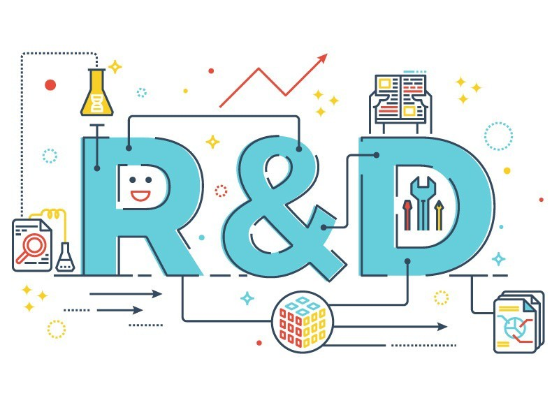
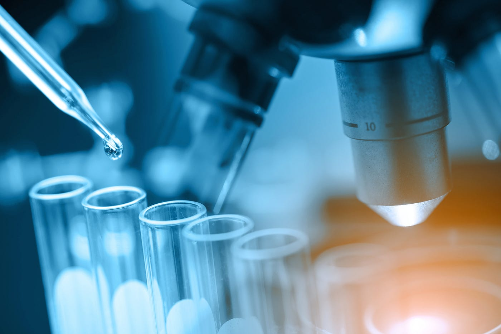
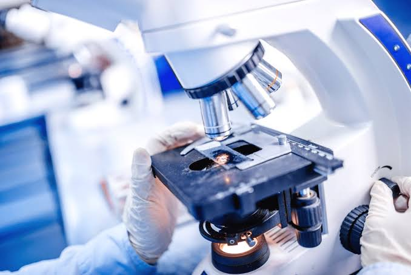

CWM R&D division has done many studies and procedures to plan out steps for appropriate waste management in Sri Lanka. This is done as an initiative to deliver sustainable solutions to the country.
CWM is engaged in managing new and unrecognized waste types including waste from industrial leftovers, industrial residuals, and other industrial raw materials.
With the dedicated R&D division, CWM is in the process of acquiring patents for many novel innovations with regard to sustainable waste management solutions in the country. CWM was awarded a patent for technology of hazardous Cathode Ray Tube converting process, with the support 3 inventors